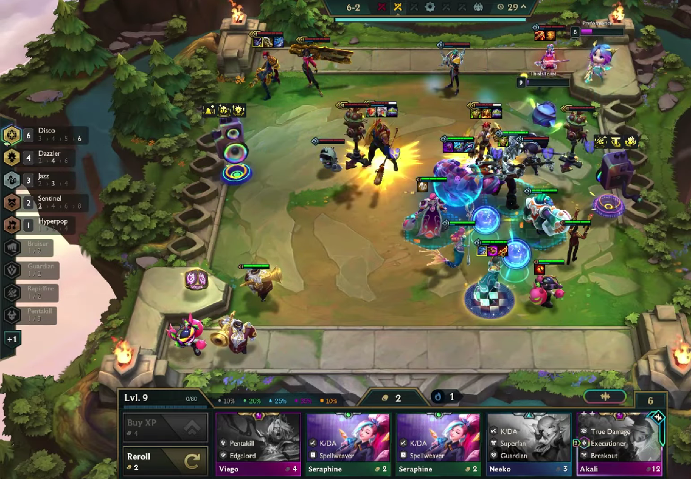

Teamfight Tactics es un juego de estrategia automatica basado en League of Legends, donde el jugador arma su propio equipo de campeones y estos pelean de forma automatica sin control directo. El objetivo es combinar bien las unidades, aprovechar las sinergias y adaptarse durante la partida para ser el ultimo jugador en pie. Cada partida es diferente, lo que hace que la toma de decisiones y la estrategia sean lo mas importante del juego.

Curiosidades del set 10
El Set 10 de Teamfight Tactics, conocido como Remix Rumble, fue uno de los mas innovadores del juego y tiene varias curiosidades que lo hacen unico. Una de las mas destacadas es que la musica cambiaba dependiendo de las sinergias que usabas, mezclandose en tiempo real y haciendo que cada partida tuviera su propio estilo, como si el jugador fuera un DJ.
Ademas, la mecanica principal llamada “Estrella principal” (Headliner) fue una evolucion de sistemas anteriores, pero mucho mas flexible y divertida, obligando a los jugadores a adaptarse en cada partida en lugar de repetir siempre la misma estrategia
Otro punto interesante es que todas las bandas del set, como K/DA, Pentakill, True Damage y HEARTSTEEL, ya existian dentro del universo de League of Legends, lo que le dio mucha mas identidad y conexion con el juego original.
Tambien fue un set muy vivo en lo visual y sonoro, con efectos, animaciones y musica que hacian que cada composicion se sintiera diferente. Incluso se podia reconocer que estaba jugando alguien solo por el sonido de su tablero.
Detras del Set 10 no solo hubo desarrolladores, sino tambien musicos y coros de personas reales que participaron en la creacion de la musica. Estas voces fueron diseñadas para mezclarse dinamicamente durante la partida, haciendo que cada composicion no solo se vea distinta, sino que tambien suene unica.
Nombre de las sinergias de cada banda musical
El Set 10 se destaco por la gran cantidad de sinergias disponibles, combinando bandas musicales con clases y estilos unicos. Esto permitio una enorme variedad de composiciones, haciendo que cada partida fuera distinta y mucho más creativa que en otros sets.
A continuacion los nombres de las sinergias de las bandas mas populares:
K/DA
Heartsteel
True Damage
Pentakill
En este video puedes escuchar como se oian cada sinergia
El Set 10 no solo fue el mejor set de TFT, fue una experiencia inigualable que ningun otro logro igualar. La musica dinamica, las bandas con identidad propia y la mecanica de Estrella principal hicieron que cada partida fuera distinta y emocionante. No era solo ganar, era disfrutar cada momento del juego.
Mientras otros sets se vuelven repetitivos, Remix Rumble se mantuvo fresco, creativo y lleno de vida. Por eso, para muchos jugadores, este set no tiene comparación y queda como el punto mas alto que alcanzo Teamfight Tactics.